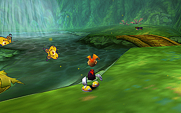

Video game references never end.
This time, I decided to title this reflective section in honor of the legendary
Rayman 2, The Great Escape.
Rayman 2: The Great Escape is a classic 1999 3D platformer where the limbless hero Rayman must escape Admiral Razorbeard's prison ship and gather the four masks to reawaken the world's spirit, Polokus. The game is celebrated for its highly imaginative, surreal fantasy world and refined 3D gameplay mechanics, setting a high standard for the genre.

Alas, I’m writing this on 26/10/2025, not on August 1st.
But let’s be honest, if someone, panicking after seeing four months of work deleted, were asked to write a reflective text… well, they probably wouldn’t have done it.
So here I am, adding that narrative touch I enjoy.
I had just been working on
GMTK 2025
It’s a game jam organized by Mark Brown (Game Maker’s Toolkit) where you create a game in 48 hours.
 and needed to free up space on my PC.
and needed to free up space on my PC.
Yes, I admit it, I’m terrible at managing space.
I opened WizTree and started deleting files one by one, carefully avoiding the folder with the video… and yet, everyone makes mistakes, right?
Apparently, a folder from my program containing all the saves got touched… and deleted.
If it weren’t for my massive 100 GB backup folder with all the exported files, I would have lost everything.
Instead, I lost about 75% of what I had produced in those months and had to start from scratch.
Yet, it’s incredible how, in such a short time, I managed to create something even better!
Perhaps it’s true, when you’re panicking, you produce three times as much as usual.